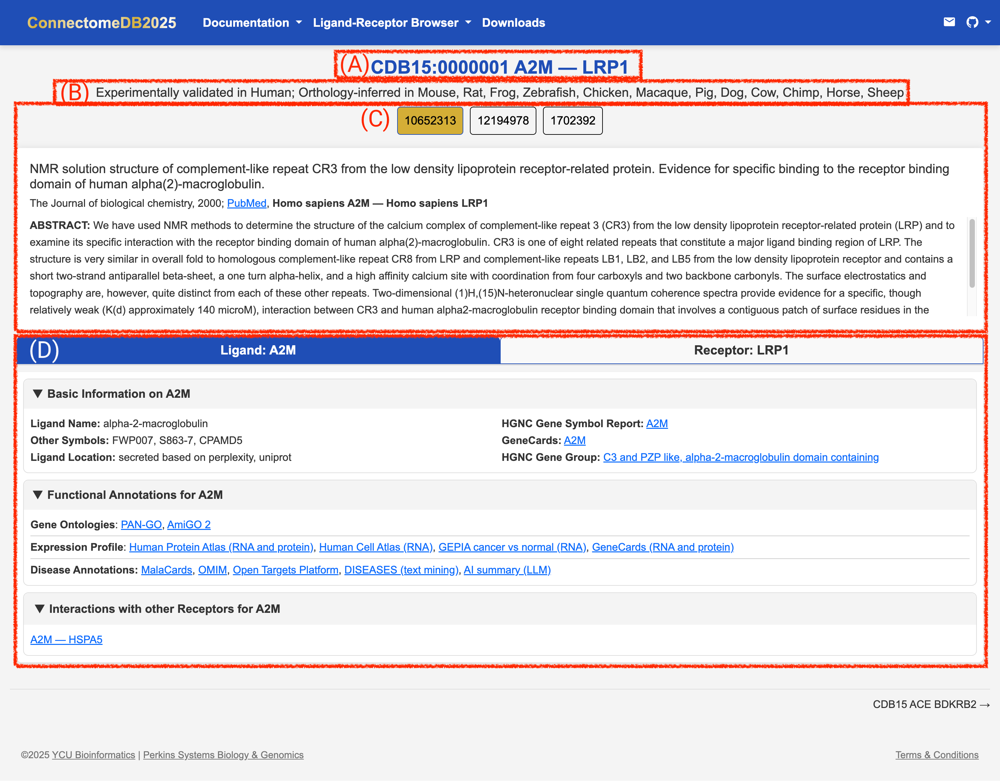

CDB2025 User Guide: LR Pair Card View
CDB2025 User Guide: LR Pair Card View
Purpose
The Ligand-Receptor (LR) Pair Card View provides detailed information about specific ligand–receptor pairs, including their interactions, species, and evidence supporting the interaction. This view is designed to help researchers quickly access comprehensive data on individual ligand–receptor pairs.
How to view a ligand–receptor pair card
To view the details of a specific ligand–receptor pair, follow these steps:
Go to the Ligand-Receptor Browser on the navigation menu and choose your target species from the drop-down menu. (See Ortholog Mapping for more details on how to select your model organism.)
Click on the Interaction ID of the ligand–receptor pair you are interested in. This will take you to the LR Pair Card View for that specific interaction. The Interaction ID is a unique identifier for each ligand–receptor pair, and it is displayed as a link in the Pair-list view table.
Explore the LR Pair Card: The LR Pair Card provides detailed information about the ligand–receptor interaction from top to bottom:
- Interaction ID: Ligand and Receptor Symbols: The unique interaction ID of the LR Pair with the official gene symbols for the ligand and receptor involved in the interaction. See (A) in the image below.
- LR Pair Species: The species in which the interaction has been validated or inferred. See (B) in the image below.
- LR Pair PMID Evidence: The PubMed ID(s) of the publications with their Abstracts and specific species for the ligand and receptor in that study. See (C) in the image below.
- Gene-based annotations: A ligand tab and receptor tab containing gene-based annotations. See (D) in the image below. This includes:
Basic Information
- Name: The official gene name for the ligand/receptor.
- Other Symbols: Alternative names or symbols for the ligand/receptor.
- Location: Predicted subcellular location of the ligand/receptor.
- HGNC Gene Symbol Report: Official gene symbol HGNC report link for the ligand/receptor.
- GeneCards: Link to the GeneCards database for the ligand/receptor. For a mouse card, this is replaced by MGI which links to the Mouse Genome Informatics (MGI) database.
- HGNC Gene Group: HGNC gene group information for the ligand/receptor. For a mouse card, this is replaced by NCBI which links to the NCBI Gene database.
Functional Annotations
- Gene Ontologies: Links to the Gene Ontology (GO) terms associated with the ligand/receptor, providing insights into their biological processes, molecular functions, and cellular components.
- Expression Profiles: Links to expression profiles of the ligand/receptor in various tissues or cell types, helping to understand their functional roles.
- Disease Annonations: Links to disease annotations associated with the ligand/receptor, providing insights into their potential roles in various diseases. It aksi includes an AI summary (LLM) link, which opens Perplexity and answers: “Which diseases is {ligand/receptor} implicated in?”.
Interactions with other Receptors/Ligands
- list of other receptors/ligands that interact with the ligand/receptor in question, along with their interaction cards.
- Name: The official gene name for the ligand/receptor.
- Interaction ID: Ligand and Receptor Symbols: The unique interaction ID of the LR Pair with the official gene symbols for the ligand and receptor involved in the interaction. See (A) in the image below.
Previous: Gene Search Look up genes in the pair list view.
Next: Download Data Learn how to download data from the ConnectomeDB for further analysis.